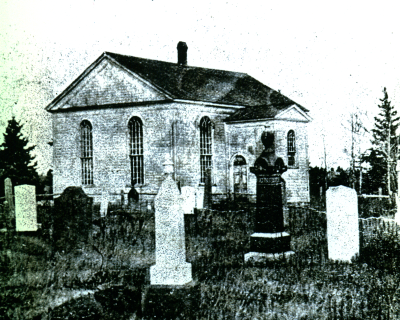

THE COMMUNITY
The name, Black River, is thought to have come from the MicMac word Matquantigook that probably meant “black river”; the Black River, with its tributaries principally the Little Black River but better known as the Little Branch River, flows into Bay due Vin and the inner Miramichi Bay. At one time, the community of Black River appears to have extended as far east as Bayside (Miramichi) and perhaps as far as the Bay due Vin River. The mouth of the Black River, around what I knew as the Victoria Bridge and Hexham area, was settled before 1800; most if not all the land around the Little Branch River, except for the Fowlie Grant, and along the south side of the Black River as far as St. Paul’s Presbyterian Church, was granted on June 3, 1812.
The earliest settlers in the Black River as we know it today were United Empire Loyalists and Highland Scots; some had settled initially along the Saint John River, moved north to the Nashwaak and eventually relocated to the Miramichi. Settlers in Bay du Vin tended to be English and followers of the Church of England with Black River being Scottish and Presbyterian. From MacDougall’s book we learn that Loyalists included Major James Macdonald, Farquahar MacRae, Angus MacDonald, Neil MacGraw, Dougald Campbell, James Gunn, Gregor McKinnnon, Donald MacVicar, John Bailey Williston, Rev. Samuel Jones and William Gardiner. From Scotland came the Cameron brothers, John MacLean, Hugh MacDougall, the MacNaughton family and William MacBeath. To our lists we must add Peter Kelly who came from Ireland, the MacLeods, Sinclairs, Fraser, etc and many other early settlers but not included in MacDougall’s book. Many residents of the same name can still be found in the community today
The land was heavily wooded, winters were long and cold and life was hard. But pioneers were hardy folk who were determined to carve out a new life for themselves, their families and their offspring. These settlers brought crude axes, shovels and other implements to clear land, plant crops and build homes. And they also brought their religion – mostly Presbyterian.
THE FIRST CHURCH
At first the settlement was served by itinerant ministers and missionaries. Among the visiting ministers was the Rev. Dr. James Drummond MacGregor, a Scot who had been sent out to minister to the Presbyterians in Pictou, Nova Scotia. In addition to serving the folk of Pictou, MacGregor traveled throughout New Brunswick, Nova Scotia and Prince Edward Island. Each visit to a community usually lasted several days, and even weeks, and included preaching, praying, and religious conversations. The Memoir of Rev. James MacGregor, D.D. written by his Grandson, Rev. George Patterson, recounts MacGregor’s visit to Black River (p.316) as follows:
“On the first and second visits to the Miramichi in 1797 and 1807, he preached and baptized at Black River, Bay du Vin, and on both sides of the Miramichi, up as far as the point, so called, at the junction of the North and South-west branches. Those who recollect him remark his happy faculty in introducing religious conversation.”
And further on:
“His being present at the induction of Mr. Thompson in 1817 is well remembered.”
A. W. MacDougall reports that a Rev. Jones resided in Bay du Vin but his religious affiliation is not known.
In 1812, a church, thought to be Presbyterian, was built in at Tuckers Point, at the mouth and on the west side of the Bay du Vin River. (While Tucker’s Point was used in conversation by several people, the name does not appear in Geographical Names of New Brunswick by Rayburn, 1975.) Some gravestones are still to be found in the area. The church served all Protestants in the area. A. W. MacDougall reported that a contract for the building of the church was in the possession of a “gentleman in Bay du Vin” and that the document:
“ bore the signature of the contractor, a Mr. Gray of Chatham, and also the names of three men representing the people, John B. Williston, Farquhar MacRae and a Mr. McLeod. Mr. Williston lived in Bay du Vin, Mr. McRae in Bay Side, and Mr. McLeod in Black River.
The church was a small building of frame construction, and was built close to the shore on the westerly side of the south of Bay du Vin River, at a spot since known as ‘Ullock’s Point’, from the name of the man who owned the surrounding land, and where a ferry connected with the other side of the river. It was used for public worship as occasion required until the building of the first church on the site at Black River, and then fell into disuse…
A small plot of land adjoining the church was used as a cemetery, and a considerable number of people were interred there.”
ST STEPHEN’S PRESBYTERIAN CHURCH
Given that Black River was founded by Scots, a growing community and that most of the Presbyterians lived several miles from Tucker’s Point, a community of people who worshipped mostly in the English tradition, it is not surprising that talk soon turned, first to finding a Presbyterian minister and later to constructing a place of worship. A. W. MacDougall reports that a public meeting was held in Bay du Vin in 1818 with a view to securing a resident minister to serve Bay du Vin, Tabusintac and Burnt Church - a minister who could speak in Gaelic as well as English since “there are several amongst us who do not understand the English”.

First Presbyterian Church in Black River (1834)
(Source Unknown)
In 1834, a public meeting was held in Black River at which it was decided to petition for a minister to serve both Black River and Tabusintac. In response to the request, the Rev. Simon Fraser was dispatched to serve their needs. I do not know if the Rev. Fraser initially served both Black River and Bay du Vin but it appears that shortly thereafter he became the minister for Black River only.
On November 10, 1834 a meeting was held in Black River at the residence of Mr. Archibald Cameron and a committee was commission to proceed with the erection of a church. The site for the church was Gunn’s Point, already being used as a burial ground, part of Lot #4 granted to Alexander Gunn on June 3, 1812. By then, the land was owned by Enoch Godfrey who gave or sold an acre for the new church. Church building committee members were:
Alexander MacBeath, Chairman
Angus Sinclair, Secretary
Alexander MacDonald
Hugh (Ewen) Cameron
Alexander Cameron
Peter MacDougall
Enoch Godfrey
W. MacDougall describes Gunn’s Point (part of Lot #4 granted to Alexander Gunn on June 3, 1812) as follows:
“The proposed site for the church, which has long been known as Church Point, is a peninsula several acres in extent, jutting out from the mainland on the South Side of the Black River about three miles from its mouth, and connected to the shore by a narrow neck of land. It has dry sandy soil, and at that time was partly covered with a heavy growth of timber. It is an ideal location for a church, probably without parallel in the whole Province. A portion of it had previously been used as a burial ground, and there it was decided to build the church.”
On April 21, 1835 a contract was awarded to William Porteous to erect the church; structural timber was cut locally. The building was 45 feet long by 30 feet wide with an 18-foot wall. On November 20, 1836, the first house of worship, St Stephen’s Presbyterian Church, was formally opened with the Rev. Mr. Fraser as its first minister.
In the years that followed, St. Stephens Church was beset by two major problems. The financial problems resulted from the costs of construction and the also the cost of ongoing operations. (This is still a challenge to churches in the 21st century.)
By the turn of the century, St. Stephen’s sanctuary had become quite dilapidated and, instead of making repairs, a decision was taken to build a new sanctuary. The result was the opening of St. Stephen’s Presbyterian Church, now St. Stephen’s United Church, on December 30, 1906.
Church differences in Scotland were transported to Canada and resulted in tensions within St. Stephens Presbyterian Church in Black River. The reader is referred to Black River and its First Settlers for further information.

Second Presbyterian Church in Black River (1906)
(Glendenning Collection)
CHURCH UNION
Divisions within the Presbyterian Church in Scotland, it seems, went on forever. Most resulted from differing views as to the proper or acceptable relationship between church and state. Scots were not prepared to accept a state church, as was the case in England. Perhaps another cause for dissension was the strong view that no minister or church hierarchy should stand between a person and his/her God. Then there was the issue of churches being able to appoint their own minister rather than have a minister appointed by the land owner or proprietor or some church body. By 1843 there were four different Presbyterian churches in Scotland – and Scots brought their differing views with them when they came to Canada. The early mid -1800’s witnessed a movement towards unification among a number of Presbyterian denominations that resulted, by 1875, in the creation of the Presbyterian Church in Canada - and discussions with other Presbyterians continued.
Other denominations were coming together as well. Union within the Methodist denomination was achieved by 1884 and within the Congregationalist churches by 1906. The Church of England, as early as 1836, had appointed a committee to explore possible union with like-minded denominations. Talk of further unification, therefore, was not unexpected. In fact, at the inception of the Presbyterian Church in Canada, Dr. John Cook, the Moderator, said, “far larger union is in store”. Others expressed similar sentiments. A federation of denominations was also considered an option.
While discussions were going on, a number of churches cooperated in the Sunday School Association of Canada, Temperance Movement, Evangelical Alliance, etc.; this helped to break down other denominational barriers. There was even a sharing of social services between congregations, cooperation in the training of clergy and a wider discussion of matters theological.
In the late 1800’s, multi-party discussions were held within the Presbyterian family and among Presbyterians, Methodists, Congregationalists and the Church of England with a view to bringing all together into a single Protestant denomination. Based on my reading, it appears to have been clergy led and clumsily executed.
By 1904 discussions were well under way towards an organic union among Protestant denominations led by a joint committee representing the Presbyterians, Methodist and Congregational denominations. The report to the General Assembly of the Presbyterian Church concluded that the process should not be unduly hurried, should carry the consent of the entire membership and should not be contemplated until all the courts of the church had a chance to consider it. “Consent of the entire membership” and concerns about an unclear doctrinal statement for the new church appear to be the major points of dissention over the next two decades. In 1906 invitations to participate in discussions were issued to the Church of England and Baptist conventions but these invitations were declined. By 1912, those against union had begun to coalesce and organize. While votes at Presbytery, Synod and General Assembly levels continued to favour union; numbers against union at the congregational level continued to grow. Support for union was strongest among clergy and leadership moved to the courts of the church rather than remaining with members and adherents.
Church Union occurred before my time, however, the event was recent enough that I was witness to some of the fall-out. I’ve since read and talked to a few people better versed than I on the subject. The main points of contention seemed centre on:
the disappearance of the name Presbyterian.
doctrinal changes
level of support required to warrant such a momentus change, and
perception that union was the first step towards a “state church”
Decisions on church union were taken by each congregation. Tabulated nationally, the 1925 voting results were:
Votes cast in favour 121,547
Votes against 114,175
Total Votes 235,722
Members not voting 144,040
Total eligible voters 379,762
In the Maritime Synod, 18,883 voted in favour of union and 13,743 voted against.
Of the 4,981 members of the Miramichi Presbytery in 1925, 2,011 voted in favour of union and 647 voted against union with 2.323 not voting. Figures for St. Stephens Church are not available, however, the majority favoured union and St. Stephens Presbyterian Church became St. Stephens United Church.
ST. STEPHEN’S PRESBYTERIAN CHURCH AFTER CHURCH UNION
As a result of the vote, Presbyterians in Black River lost their sanctuary but not their denomination nor their tradition. Presbyterians continued to worship as members of St. Stephen’s Presbyterian Church as late as September 30, 1928 and perhaps until the new Presbyterian church opened in 1930. Services were held in the Little Branch School, the Upper Black River School and in members’ homes being led by visiting ministers, congregational leaders and student ministers. Although formal records are scanty, records show that in 1926 there was an active Women’s Missionary Society, a Women’s League, Mission Band and Sunday School. Also in 1926, the first baptisms (Kenneth Glendenning, Norman Glendenning and Roy Watling) were conducted on June 14 by Rev. F. G. MacIntosh. A Presbyterian Young People’s Society was formed in 1930 with Venetia (Glendenning) Russell as the first President.
During a meeting of the Annual Miramichi Presbyterial Meeting on July, 18, 1930, a report was given by Mrs. Alex Macdonald representing the Black River Auxiliary; the Black River Auxiliary also provided the lunch for delegates.
Church records show that a meeting of the Session of St. Stephen’s Presbyterian Church was held in the Upper Black River School on September 30, 1928 at 3:00 pm with Rev. Wm. Stewart as Moderator and James A. Watling and James F. Godfrey as Elders. The meeting opened with prayer and the Sacrament of the Lord’s Supper was observed.
The following former communicant members of St. Stephen’s Presbyterian Church were received by the Session and inscribed on the roll of the church:
Mrs. Richard Godfrey Black River Bridge
Mrs. Kenneth MacDonald Little Branch
Mrs. Grace Watling Little Branch
Mrs. James R. Cameron Little Branch
Mrs. Alex E. MacDonald Little Branch
Mrs. Robert McDougall Hexham
Mrs. John E. McNaughton Black River
Mrs. Freeman McNaughton Black River
Mrs. Elmer A. Glendenning Little Branch
James R. Cameron Hexham
Malcolm Dick Black River
James Cameron Hexham
James McLean Black River Bridge
Mrs. John R. Godfrey Black River Bridge
James F. Godfrey was elected Clerk of Session. James A. Watling named Representative Elder. (Ed. Watling went on to become one of the longest serving elders ever in the Presbyterian Church in Canada)
On July,Date/place 1929, a resolution was passed to erect a new sanctuary on land donated by Mr. John Gibson, and a building committee was appointed consisting of:
James A. Watling, Convener,
John E. MacNaughton,
Rankine MacLean,
Elmer A. Glendenning,
James F. Godfrey,
John R. Godfrey and
John Gibson.
Local carpenters carried out construction of the edifice during 1929-30; Walter Glendenning hauled much of the lumber from Chatham and pulpit and pews were purchased from the former Methodist Church in Chatham. Total cost of the new building was $3,000; wages for labor at the time was $2.00 per day. The pulpit and pews were purchased from the former Methodist church in Chatham.
During a search at the Registry Office in Newcastle a number of years ago, I came across a record, No.226, dated November 9, 1944, showing the discharge of a mortgage against James A. Watling, Elmer Glendenning, John E. MacNaughton, John R. Gibson and John L. R. Godfrey. The other parties to the agreement were Ernest William McNeill and John Forbes Michie of the City of Toronto. The amount is not given but the date of the original mortgage agreement was April 23, 1931. I believe this to be the mortgage for St. Paul’s church.
ST. PAUL’S PRESBYTERIAN CHURCH DEDICATED
On Friday, July 18, 1930, the 34th annual Miramichi Presbyterial met in the new facility. Activities included a morning session, lunch served by the ladies of Black River, a missionary pageant and service in the afternoon.
The evening included a pageant presented by the Chatham PYPS, installation of officers, remarks by Dr. Squires, Minister of the Presbyterian Church in Chatham and by Mr. James A. Watling, the Representative Elder. A formal service of dedication was held at 8:00 pm chaired by Rev. J. W. Paul of Bathurst, Moderator and Clerk of Presbytery. Presbyterians in Black River now had their own sanctuary again. Newspaper report of dedication referred to the ‘dedication of the building, which is to be known as St. Paul’s Presbyterian Church”
The fist regular worship service conducted by Dr. George C Squires of Chatham was conducted On July 20, 1930 Robert Burns Adams and Donald Ernest Malcolm glendenning were baptized sons of …

Third Presbyterian Church in Black River (1930)
(Glendenning Collection)
A clipping from the local paper, unnamed and undated, describes the new building as follows:
“The new church is completed and ready for opening. A fine and beautiful edifice it is – a credit to any community. In these days when any kind of a building may pass for a church, it can be truly said that the structure in Black River reflects the ideal eclesiastical architecture for a small house of worship. The church has evoked nothing but praise from all who have seen it. Great appreciation is expressed to all who worked to make it what it is – to the building committee, to the carpenters in charge and others who have laboured without stint.”
In late 1930, discussions were held with Presbyterian congregations in both Kouchibouguac and Richibucto with a view to sharing the services of a full-time minister. As a result, Knox Presbyterian Church, Kouchibouguac and St. Paul’s became a two-point charge. In 1950, Calvin Presbyterian Church began to share a minister with St. Paul's and Knox – an arrangement that continues to this day.
BLACK RIVER CEMETERY
The writer is not unaware of the tension within the congregation at the time, and within church families, with events surrounding Church Union; some may still exist. Perhaps the outstanding issue is that of the cemetery. Even today, road signs point to both the Black River Cemetery and St. Stephens Cemetery yet they are one and the same.
As mentioned earlier, there was a burial ground beside the church in Bay due Vin. As early as 1823, however, the first burial took place on the present burial site in Black River. The original land on which the church and cemetery are located, Lot Number 4, was granted to Alexander Gunn on June 3, 1812. The area on which the church and cemetery are located was known as Gunn’s Point; later ownership of the land passed to Enoch Godfrey. In the history of St. Stephens, Ernest MacLean reported the first burial in 1823 of Enoch’s father-in-law, Robert MacBeath; the second burial, a year later, was Duncan MacNaughton who was killed by a falling log. Perhaps this was the origin of the “Black River Cemetery” to distinguish it from the one in use in Bay due Vin. In any case, according to my information, St. Stephen’s Presbyterian Church purchased the land in 1836 at the time that the new church was erected in Black River. The name, Church Point, which applies to the location at present, probably arises from that time.
A search of church records may throw more light on the issue of cemetery name. Was it St. Stephens Cemetery? Or St. Stephens Presbyterian Cemetery? Again in 1925, did the name remain as St. Stephens Cemetery or was it formally changed to St. Stephens United Church Cemetery. I leave it to others to sort out this issue. In any case, in 1940, the congregation of St. Stephens United Church passed a resolution granting Presbyterians the same rights and privileges as to the use of the cemetery as they had before church union and invited St. Paul’s congregation to name a member to the Cemetery Committee. The Presbyterians accepted the offer and decided that a separate Presbyterian cemetery was not needed.
SOME FIRSTS